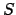
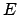
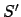
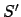

Next: Acknowledgements
Up: Operational Semantics
Previous: Class definitions
Contents
Equipped with environments, stores, objects, and class
definitions, we can now attack the operational semantics for Cool.
The operational semantics is described by rules similar to the rules
used in type checking. The general form of the rules is:
The rule should be read as: In the context where self is the object
, the store is , and the environment is ,
the expression  evaluates to
object
evaluates to
object  and the new store is .
The dots above the horizontal bar stand for other statements about the
evaluation of sub-expressions of .
and the new store is .
The dots above the horizontal bar stand for other statements about the
evaluation of sub-expressions of .
Besides an environment and a store, the evaluation context
contains a self object . The self object is just the object to which
the identifier self refers if self appears in the
expression. We do not place self in the environment and store because
self is not a variable--it cannot be assigned to.
Note that the rules specify a new store after the evaluation of an
expression. The new store contains all changes to memory resulting
as side effects of evaluating expression .
The rest of this section presents and briefly discusses each of the operational
rules. A few cases are not covered; these are discussed at the end of the section.
An assignment first evaluates the expression on the right-hand side, yielding
a value . This value is stored in memory at the address for the
identifier.
The rules for identifier references, self, and constants are straightforward:
A new expression is more complicated than one might expect:
The tricky thing in a new expression is to initialize the attributes
in the right order. If an attribute does not have an
initializer, do not evaluate an assignment expression for it in the
final step.
Note also that, during initialization, attributes are
bound to the default of the appropriate class.
The two dispatch rules do what one would expect. The arguments are
evaluated and saved. Next, the expression on the left-hand side of
the ``.'' is evaluated. In a normal dispatch, the class of this expression
is used to determine the method to invoke; otherwise the class is specified
in the dispatch itself.
There are no surprises in the if-then-else rules. Note that value of
the predicate is a Bool object, not a boolean.
Blocks are evaluated from the first expression to the last expression, in
order. The result is the result of the last expression.
A let evaluates any initialization code, assigns the result to the variable
at a fresh location, and evaluates the body of the let. (If there
is no initialization, the variable is initialized to the default value
of .) We give the
operational semantics only for the case of let with a single variable.
The semantics of a multiple let
is defined to be the same as
Note that the case rule requires that the class hierarchy be available in
some form at runtime, so that the correct branch of the case can be selected.
This rule is otherwise straightforward.
There are two rules for while: one for the case where the predicate is
true and one for the case where the predicate is false. Both cases
are straightforward. The two rules for isvoid are also straightforward:
The remainder of the rules are for the primitive arithmetic and logical
operations. These are all easy rules.
Cool Ints are 32-bit two's complement signed integers; the arithmetic
operations are defined accordingly.
The notation and rules given above are not powerful enough to
describe how objects are tested for equality, or how runtime
exceptions are handled. For these cases we resort to an
English description.
In , first is evaluated and then is evaluated.
The two objects are compared for equality by first comparing their
pointers (addresses). If they are the same, the objects are equal.
The value void is not equal to any object except itself.
If the two objects are of type String, Bool, or
Int, their respective contents are compared. <
and <= are handled similarly. The case for integer arguments
is simple:
... but String and Bool also admit comparisons. String
comparisons are performed using the standard ASCII string ordering (e.g.,
"abc" < "xyz"). For booleans, false is defined to be
less than true. Any other comparison (e.g., a comparison among
non-void objects of different types) returns false. Note that
for some objects this may be unintuitive: if c is a Cat and
d is a Dog then c < d is false but
d < c is also false. Note also that comparison
is based on the dynamic type of the object, not on the static type of the
object.
In addition, the operational rules do not specify what happens in the
event of a runtime error. When a runtime error occurs, output is flushed
and execution aborts. The following list specifies all possible runtime
errors.
- A dispatch (static or dynamic) on void.
- A case on void.
- Execution of a case statement without a matching branch.
- Division by zero.
- Substring out of range. (This error is always reported on line 0, since it occurs inside an "internal" library function.)
- Heap overflow. (You do not need to implement this runtime
error.)
- Stack overflow.
Each outstanding "method invocation" (static or dynamic) and each
outstanding "new" object allocation expression counts as a "Cool Activation
Record". (Just to be clear, that second clause about "new" is counting
currently-resolving constructor calls, not "total objects living in the
heap".) A Cool interpreter must flag a "stack overflow" runtime
error if and only if there are 1000 (one thousand) or more
outstanding Cool Activation Records.
Finally, the rules given above do not
explain the execution behaviour for dispatches to primitive methods defined in
the Object, IO, or String classes.
Descriptions of these primitive methods are given in Sections 8.3-8.5.
Next: Acknowledgements
Up: Operational Semantics
Previous: Class definitions
Contents
![\begin{displaymath}
\frac{\begin{array}{l}
so,S_1,E\vdash e_1 : Int(i_1),S_2\\ ...
...y}}{so,S_1,E\vdash \mbox{\~{}}e_1 : v_1,S_2}\eqno
\mbox{[Neg]}
\end{displaymath}](img182.png)
![\begin{displaymath}
\frac{\begin{array}{l}
so,S_1,E\vdash e_1 : Int(i_1),S_2\\ ...
...ay}}{so,S_1,E\vdash e_1\ op\ e_2 : v_1,S_3}\eqno
\mbox{[Comp]}
\end{displaymath}](img181.png)